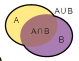

Prérequis des mathématiques
Fondements de Probabilité
Quelques définitions
On appelle épreuve E toute expérience probabiliste.
On appelle univers de E l’ensemble, généralement noté Ω, de tous les résultats possibles de l’épreuve E (appelés ‘’événements élémentaires’’)
Lancer une paire de dés équilibrés et en retenir la somme est une épreuve.
\[ 𝛀 = \bigl\{ 2,3,4,5,6,7,8,9,10,11,12\bigl\} \]
Evénements
Un événement est un sous-ensemble de Ω.
- L’intersection de A et B, notée \(A\ ∩ B\), est un événement. Il est réalisé uniquement si A et B se produisent.
La réunion de A et B, notée A B, est un événement. Il est réalisé si A ou B se produit.
Deux événements remarquables sont à retenir:
L’événement certain \(𝛀_i\).
L’événement impossible \(∅_i\).
Tous les éléments qui n’appartiennent pas à \(A\) appartiennent à un événement que l’on appelle le complémentaire de \(A\). On le note \(A^c\ ou\ \overline{A}\) .
On dit que deux événements A et B sont incompatibles s’ils ne peuvent pas être réalisés enmême temps.
Si A, B et C sont des événements de Ω, les propriétés suivantes sont toujours vérifiées:
\(A\ ∪ \ \overline{A}\ = 𝛀\)
\(A\ ∩ \ \overline{A}\ = ∅\)
\(\overline{A∩B}\ = \bar{A}\ ∪\ \bar{B}\ et\ \overline {A∪B}\ = \bar{A}\ ∩\ \bar{B}\ (lois\ de\ Morgan)\)
\(A\ ∩\ (B\ ∪\ C)\ = (A\ ∩ B)\ ∪\ (A\ ∩\ C)\)
\(A\ ∪\ (B\ ∩\ C)\ = (A\ ∪ B)\ ∩\ (A\ ∪ \ C)\)
Partitions
La famille d’événements forme une partition de 𝛀 si :
\[ ∪_i\ A_i\ =\ \Omega\ et\ A_i\ \cap\ A_j\ = \emptyset;\ \forall i\ \ne\ j;\ i\ \in I \]
Une partition remarquable est la famille qui contient l’événement A et son complémentaire.
Tribus et boréliens
Comment pouvons nous qualifier l’ensemble des événements ?
Une tribu est une famille \(T\) de parties de l’ensemble \(\Omega\) qui vérifie les propriétés suivantes:
\(\Omega\ \in T\)
Si \((A_n)_n\) est une suite dénombrable d’éléments de \(T_i\) alors \(\cup\ A_n\ \in\ T\)
Si \(A\) est un élément de \(T_i\) alors son complémentaire l’est aussi
De plus, si \(T\) est une tribu, alors:
\(\emptyset\ \in\ T\)
Si \((A_n)_n\) est une suite d’éléments de \(T_i\) alors \(\cap\ A_n\ \in\ T\).
Exemple de Tribus:
Commençons par le cas discret.
On considère l’expérience “Lancer une pièce de monnaie équilibrée”.
On notera: P “Pile apparait” et F “Face apparait”.
Dans ce cas, l’univers est l’ensemble {P,F} et \(T\) = { \(\Omega,\ \emptyset,\) P, F } est une tribu.
En général, l’ensemble des parties est une tribu (classique).
Pour le cas continu, les intervalles du type \([a, +\infty[\ ;\ ]-\infty,a]\) sont des tribus.
Nous les appelons des Boréliens.
Soient A et B deux événements. Les propriétés suivantes sont toujours vraies:

\(P(\bar{A})\ =\ 1\ -\ P(A)\)
\(P(B)\ =\ P(A\ \cap\ B)\ +\ P(\bar{A}\ \cap\ B)\)
\(Si\ A\ \subset\ B\ alors\ P(A)\ \leq\ P(B)\)
\(0\ \leq\ P(A)\ \leq\ 1\)
\(P(A\ \cup\ B)\ =\ P(A)\ +\ P(B)\ -\ P(A\ \cap\ B)\)

De plus, Considérant une suite \((A_n)_n\) d’événements. On a alors :
\[ P(\bigcup\limits_{k=1}^{+\infty} A_{k})\ = \lim_{x\to+\infty} (P(\bigcup\limits_{k=1}^{n} A_{k})) \]
\[ P(\bigcap\limits_{k=1}^{+\infty} A_{k})\ = \lim_{x\to+\infty} (P(\bigcap\limits_{k=1}^{n} A_{k})) \]
\[ P \Bigl( \bigcup\limits_{k=1}^{+\infty} A_{k} \Bigl) \ \leq\ \sum_{k=1}^{+\infty}\ P(A_k) \]
Et si :

\[ \bigcup\limits_{k=1}^{n} A_{k}\ =\ \Omega \]
Alors :
\[ P(B)\ =\ \sum_{k=1}^{n}\ P(B\ \cap\ A_k) \]
Mesure
Soit E un ensemble muni d’une tirbu \(T\) . On appelle mesure toute application m : \(T\) \(\rightarrow\) \(R^+\) telle que:
m(\(\emptyset\)) = 0.
Si \((A_n)_n\) est une suite d’éléments de \(T\) deux à deux disjoints alors:
\[ m(\cup_n\ A_n)\ =\ \Sigma_n\ m(A_n) \]
Probabilité
Soit E un ensemble muni d’une tribu \(T\) On appelle probabilité toute m : \(T\ \rightarrow\ R^+\) telle que:
P(\(\emptyset\)) = 0
Si \((A_n)_n\) est une suite d’éléments de \(T\) deux à deux disjoints alors:
\[ P(\cup_n\ A_n)\ =\ \Sigma_n\ P(A_n) \]
Probabilités conditionnelles
En théorie des probabilités, nous nous intéressons souvent au comportement d’un aléa, sachant qu’un autre événement est déjà passé.
C’est ce que nous appelons Les Probabilités Conditionnelles.
Considérant deux événements de proba non nulles A et B, la probabilité conditionnelle de A sachant que B est réalisé (couramment dit A sachant B) est :
\[ P(A\setminus B)\ =\ \frac{P(A\ \cap\ B)}{P(B)} \]
Par commutativité de l’intersection nous avons : \(P(A\ \cap\ B)\ =\ P(B\ \cap\ A)\)
Et donc en utilisant la formule ci-dessus :
\[ P(B\setminus A)P(A)\ =\ P(A\setminus B)P(B) \]
D’où alors :
\[ P(B\setminus A)\ =\ \frac{P(A\setminus B)P(B)}{P(A)} \]
C’est ce que nous appelons : La formule de BAYES
Indépendance
Deux événements A et B sont dits indépendants si et seulement si :
\[ P(A\ \cap\ B)\ =\ P(A)P(B) \]
En termes courants, deux événements sont indépendants si le résultat de l’un n’influence aucunement l’aboutissement de l’autre.
Sous condition d’indépendance de A et B, la notion de la probabilité conditionnelle tombe à l’eau, car les événements évoluent l’un sans se soucier de l’autre.
Ceci se traduit par :
\[ P(A\setminus B)\ =\ P(A)\\P(B\setminus A)\ =\ P(B) \]
Notons que si A est indépendant de B, il le sera par rapport à son coplémentaire également et vice versa.
En général, pour une suite \((A_n)_n\) d’événements indépendants, on a :
\[ P(\bigcap_{i=1}^{n}A_i)\ =\ \prod_{i=1}^{n} P(A_i)\ =\ P(A_1)\ ...\ P(A_n) \]
Cette formule est largement utilisée en statistique.
Remarque importante :
Il ne faut pas confondre l’indépendance et l’incompatibilité des événements.
Variable aléatoire
Une variable aléatoire est un nombre qui dépend du résultat d’une expérience aléatoire. Chaque exécution de l’expérience génère une réalisation de la variable aléatoire.
Mathématiquement, on définit une variable aléatoire X comme une fonction X : \(T\ \rightarrow\ R\) qui associe à chaque événement S, un réel X(S).
Par exemple, dans une queue pour la caisse d’un magasin, le nombre de clients est une variable aléatoire. La durée de traitement de chaque requte aussi.
Remarquons que la première est un nombre entier. On dit qu’elle est à support discret. Alors que la deuxième est une durée (un nombre réel). On dit qu’elle est à support continu.
Qu’est ce qui caractérise une variable aléatoire ?
Fonction de répartition
Une VA traduit le résultat d’une expérience aléatoire en nombre réel. La fontion de répartition transporte le calcul des probabilités concernant les réalisations de la VA.
C’est la fonction définie par :
\[ F_x(x)\ =\ P(X\ \leq\ x) \]
Propriétés :
\[ \forall x;\ 0\leq F_x(x)\leq 1 \]
\(F_x\) est une fonction croissante.
\[ \lim_{x\to-\infty} F_x(x)\ =\ 0\\\lim_{x\to\infty} F_x(x)\ =\ 1 \]

Cas discret Cas continu
Probabilité ponctuelle / Densité
Cas discret : Probabilité ponctuelle
La probabilité ponctuelle est la fonction qui décrit les sauts de la fonction de répartition :
\[ P(X=K)\ =\ P(X\leq K)\ -\ P(X\leq K-1)\ =\ P_K \]

Cas continu : densité de probabilité
La densité est la fonction qui décrit les variations de la fonction de répartition :
\[ f_x(x)\ =\ \frac{\delta F_x}{\delta x}(x)\\\int f_x = 1 \]
Moments
Espérance
L’éspérance d’une variable aléatoire est sa valeur attendue. C’est une mesure de localisation de la distribution.
Dans le cas discret :
\[ E(X)= \sum_{k\in X(\Omega)} k.P(X=k) \]
Alors que dans le cas continu :
\[ E(X) = \int_{x\in X(\Omega)} x.f_x(x).dx \]
Thérorème de Transfert :
\[ E(\phi(X)) = \sum_{k\in X(\Omega)} \phi(k).P(X=k)\\ E(\phi(X)) = \int_{x\in X(\Omega)} \phi(x).f_x(x).dx \]
Variance
La variance d’une variable aléatoire décrit la dispersion de la variable aléatoire autour de sa valeur moyenne (son espérance). Elle est définie par :
\[ V(X)=E(X^2)\ -\ (E(X))^2\ =\ E((x\ -\ E(X)^2) \]
Sa racine carrée est appelée écart-type et notée généralement :
\[ \sigma(X)= \sqrt{V(X)} \]
Centrage et réduction
Le centrage consiste à localiser la distribution autour de l’origine et la réduction consiste à normaliser la dispersion. La technique est simple :
\[ Y= \frac{X\ -\ E(X)}{\sigma (X)} \]
Moments d’ordre r :
Le moment d’ordre r est défini par :
\[ \mu_r = E(X^r) \]
Le moment centré d’ordre r est défini ainsi :
\[ \tilde{\mu_r}= E((X\ -\ E(X))^r) \]
Couples aléatoires
La fonction \(F_{x,y}(x,y) = P(X\leq x\ \cap\ Y\leq y)\) est dite distribution conjointe de X et de Y.
Dans le cas continu, la fonction définie par :
\[ f_{x,y}(x,y) = \frac{\delta^2}{\delta_x \delta_y} F_{x,y}(x,y) \]
Est une densité conjointe du couple (X,Y). On a donc :
\[ F_{x,y}(x,y) = \int_{-\infty}^{x} \int_{-\infty}^{y} f_{x,y}(t,u)dtdu \]
Dans le cas discret, on définit la fonction de fréquences conjointes :
\[ P(X=x_i,Y=y_j) = p_{ij} \]
Et on a donc :
\[ F_{x,y}= \sum_{i:x_i\leq x}\sum_{j:y_j\leq y} p_{ij} \]
Loi marjinale
On définit la loi marginale de X:
\[ f_x(x) = \int_{-\infty}^{+\infty} f_{x,y}(x,y)dy \]
Dans le cas continu, ou encore :
\[ f_x(x_i) = \sum_j p_{ij} \]
Dans le cas discret :
(De meme on peut définir la densité marginale de Y)
Si X et Y sont indépendants, alors :
\[ f_{x,y}(x,y) = f_x(x)f_y(y) \]
Covariance
La covariance mesure l’intensité de la relation linéaire entre deux variables aléatoires X et Y.
\[ Cov(X,Y) = E(XY)\ -\ E(X)E(Y) \]
Si X et Y sont indépendants, alors :
\[ Cov(X,Y) = 0 \]
Attention : La réciproque n’est pas vraie.
À mémoriser
Soient U, V, X et Y des variables aléatoires et a, b, c et d des constantes réelles.
Espérance
\[ E(aX + bY)\ =\ aE(X) + bE(Y)\\ E(a) = a \]
Variance
\[ V(aX) = a^2 V(X) \]
\[ V(A)=0 \]
\[ V(X+Y) = V(X)+V(Y)-2Cov(X,Y) \]
\[ V(X-Y)=V(X)+V(Y)-2Cov(X,Y) \]
Covariance
\[ Cov(X,Y)=Cov(Y,X) \]
\[ Cov(aX+b,cY+d)= ac.Cov(X,Y) \]
\[ Cov(aX+bY,U)=aCov(X,U)+bCov(Y,U) \]
\[ Cov(X,cU+dV)=cCov(X,U)+dCov(X,V) \]
\[ Cov(aX+bY,cU+dV)=ac.Cov(X,U)+adCov(X,U)+bcCov(Y,U)+bdCov(Y,V) \]
Vecteurs aléatoires
Un vecteur aléatoire est un n-uplet formé de variables aléatoires. On note \((X_1,X_2,…,X_n)^t\)
L’espérance est toujours linéaire. Pour une suite \((a_i)_{i\in \left\{1,…,n\right\}}\) de réels, on a :
\[E(a_1X_1+a_2X_2+...+a_nX_n)= a_1E(X_1)+a_2E(X_2)+...+a_nE(X_n)\]Pour les variables indépendantes, on a :
\[V(X_1 +X_2 +...+ X_n) = V(X_1)+ ...+V(X_n) \]
Lois usuelles
Lois discètes

Lois absolument continues

Théorème de Fisher :
Soient \(\sigma > 0,\ m\in \mathbb{R}\ et\ X_1,...,X_n\) des variables aléatoires indépedantes et de même loi \(N(m,\sigma^2)\). Alors, si \(X=(X_1, …, X_n)\) :
\(\bar{X_n}\ et\ S_n(X)\) sont indépedantes;
\((n-1)S_n^2\ /\ \sigma^2 \thicksim \chi^2_{n-1}\);
\(\sqrt{n}(\bar{X}_n - m)\ /\ S_n(X)\thicksim \tau_{n-1}\);
Théorème de Cochran :
Soient \(\sigma > 0, X \thicksim N_n(0,\sigma^2)\) et \(V_1 \oplus … \oplus V_p\) une décomposition de \(\mathbb{R}^n\) en sous-espaces vectoriels orthogonaux de dimensions \(r_1, … , r_p\).
Alors les projectons orthogonales \(\pi_1, … , \pi_p\) de X sur \(V_1, … , V_p\) sont des vecteurs gaussiens indépendants et pour chaque i = 1, … , p:
\[ \frac{1}{\sigma^2}\ ||\pi_i||^2 \thicksim \chi^2_{r_i} \]
Statistique inférentielle
L’échantillonnage
Soit X une v.a. sur \(\Omega\) . Un échantillon de X de taille n est un n-uplet \((X_i , …, X_n)\) de v.a. iid.
Une réalisation de cet échantillon est un n-uplet de réels \((x_1, …, x_n)\) où \(X_i(\omega) = x_i\).
Estimateur
Un estimateur de \(\theta\) est une statistique \(\widehat{\theta}\) (donc une fonction de \((X_1, …, X_n)\)) qui ne dépend pas de \(\theta\) et dont la réalisation est envisagée comme une “bonne valeur” du paramètre \(\theta\).
Risque quadratique
La qualité d’un estimateur est mesurée à travers son risque quadratique définie par :
\[ R_{\widehat{\theta}}(\theta) = V(\widehat{\theta}) + b_{\widehat{\theta}}^2(\theta) \]
Biais
On appelle biais d’un estimateur \(\widehat{\theta}\) pour \(\theta\) la valeur :
\[ b_{\widehat{\theta}}(\theta) = E(\widehat{\theta}) - \theta \]
Un estimateur T est dit sans biais si :
\[ E(\widehat{\theta}) = \theta \]
Statistique
On appelle statistique sur un n-échantillon une fonction mesurable de \((X_1, …, X_n)\) ne dépendant pas de \(\theta\).
Consistance
Un estimateur \(\widehat{\theta}\) est dit fortement consistant s’il converge en presque-sûrement vers \(\theta\) lorsque \(n\rightarrow +\infty\).
Moyenne empirique
On appelle moyenne de l’échantillon ou moyenne empirique, la statistique notée \(\bar{X}\) définie par :
\[ \bar{X} = \frac{1}{n} \sum_{i=1}^{n} X_i \]
Variance empirique
On appelle variance empirique non biaisée, la statistique notée \(S_n^2\) définie par :
\[ S_n^2 = \frac{1}{n-1} \sum_{i=1}^n (X_i\ -\ \bar{X}) \]
Estimation par la méthode du maximum de vraisemblance
On appelle fonction de vraisemblance de \(\theta\) d’un n-échantillon, la fonction suivante :
\[ V_{x_1, ..., x_n}(\theta) = f_{x_1, ..., x_n}(x_1, ..., x_n) = \prod_{i=1}^nf_{x_1,\theta}(x_i) \]
avec
\[ f_{x_1,\theta}(x_i) = \left\{ \begin{array}{ll} f_{X,\theta}(x)\ lorsque\ X\ est\ une\ v.a.\ continue\ de \ densité\ f_{X,\theta}\\ P_{X,\theta}(x)\ lorsque\ X\ est\ une\ v.a.\ discrète\ de\ probabilité\ ponctuelle\ P_{X,\theta} \end{array} \right. \]
La méthode consistant à estimer \(\theta\) par la valeur qui maximise V (vraisemblance) s’appelle méthode du maximum de vraisemblance.
Les étapes à suivre sont les suivantes :
Calculer la fonction de vraisemblance ci-dessus;
Calculer le log de la fonction de vraisemblance noté L;
Calculer la dérivée de la log-vraisemblance obtenue par rapport à \(\theta\);
Trouver la valeur \(\widehat{\theta}\) qui annule la dérivée;
Vérifier que la dérivée seconde par rapport à \(\theta\) est négative en \(\widehat{\theta}\).
En résumé, si la dérivée première s’annulle en \(\theta = \widehat{\theta}\) et que la dérivée seconde est négative en \(\theta = \widehat{\theta}\), alors \(\widehat{\theta}\) est un maximum local de \(V_{x_1, …, x_n}(\theta\)).
Intervalle de confiance
Un intervalle de confiance permet d’avoir une idée de la marge d’erreur de l’échantillon représentatif sélectionné. En estimant cette marge d’erreur, on est donc en mesure de faire une estimation assez précise de ce qu’aurait été le résultat réel.

Test d’hypothèses
Un test d’hypothèses sert à répondre à une question donnant 2 résultats alternatives complémentaires. Il faut alors définir :
La question (des hypothèses);
Une façon d’y répondre (une règle de décision).
Hypothèse
Une hypothèse est un ensemble de valeurs des paramètres inconnus de la population.
Dans une question, on distingue en général deux hypothèses étant :
Une hypothèse nulle, notée \(H_o\) :
\[ H_o : \theta\ \in\ \theta_o \]
Une hypothèse alternative, notée \(H_1\):
\[ H_1 : \theta\ \notin\ \theta_0 \]
Avec \(\theta_o\) une valeur spécifiée pour un paramètre \(\theta\) de la population.
Test et test paramétrique
Un test est la donnée d’un jeu d’hypothèse et d’une règle de décision.
Un test peut être unilatéral si l’hypothèse \(H_1\) s’exprime sous forme d’inégalités strictes ou bilatéral si \(H_1\) s’exprime sous forme de différences (\(\neq\)).
Un test paramétrique est un test pour lequel des hypothèses sur la distribution des populations sont requises.
Erreurs et risques
Lorsqu’on prend l’hypothèse nulle, la valeur estimée \(\theta_o\) pour un paramètre \(\theta\) de la population peut conduire à des erreurs. Ces erreurs sont habituellement classés en 2 catégories :
L’erreur de première espèce;
L’erreur de seconde espèce
Chaque erreur entraine un risque qui lui correspond :
Le risque de première espèce, notée \(\alpha\), est le risque de rejeter l’hypothèse \(H_o\) alors qu’en réalité cette hypothèse est vraie;
Le risque de seconde espèce, notée \(\gamma\), est le risque d’accepter l’hypothèse \(H_o\) alors qu’en réalité cette hypothèse est fausse
Le tableau suivant résume l’ensemble des couples (décisions/réalités) possibles :

La quantité \(\beta\) est une probabilité de bonne décision appelée puissance du test.
Lien utile : Récapitulatif des tests statistiques
Econométrie
Modèle linéaire
On cherche à expliquer / prédire une variable \(Y_i\) à l’aide de p variables aléatoires \(X_i^{(1)}, …, X_i^{(p)}\).
On considère le modèle :
\[ Y_i = X_i^{(1)}\beta_1\ +\ ...\ +\ X_i^{(p)}\beta_p\ +\ \epsilon_i,\ \forall i\ \in\ [1;n]. \]
Pour déterminer les paramètres à estimer du modèle, il est plus simple d’écrire le modèle sous forme matricielle :
\[ Y = X\beta\ +\ \epsilon \]
\(Y \in R^n\) est appelée variable endogène, c’est à dire la variable à expliquer ou prédire.
\(X \in M_{n,p}(R)\) et contient les \(X_i^{(1)}, …, X_i^{(p)}\) qui sont appelées variables exogènes, c’est à dire les variables explicatives.
\(\beta \in R^p\) contient les paramètres à estimer du modèle.
\(\epsilon \in R^p\) contient le terme d’erreur du modèle non observable.
Hypothèses sur les erreurs
4 hypothèses sur les erreurs sont à vérifier dans le cadre d’un modèle linéaire OLS :
\(\forall i \in [1;n];\ E(\epsilon_i) = 0\) : les erreurs sont centrées;
\(\forall i \in [1;n];\ V(\epsilon_i) = \sigma^2\) : les erreurs sont homoscédastiques;
\(\forall i\neq j \in [1; n]; E(\epsilon_i,\epsilon_j) = 0\) : les erreurs ne sont pas auto-corrélées;
\(\forall i \in [1;n]; \epsilon_i\ ∼ N(0,\sigma^2)\) : les erreurs sont normalement distribuées.
Hypothèses structurelle
Dans le cadre d’un modèle linéaire OLS, on doit retrouver 3 hypothèses structurelles :
- Les variables \(X_1, …, X_p\) sont orthogonales à \(\epsilon\);
- Les variables \(X_1, …, X_p\) forment une base de \(R^{p+1}\);
- n > p+1.
Décomposition de la variance

L’équation d’analyse de la variance est : SCT = SCE + SCR, cela veut dire que la somme des carrées totale = somme des carrées expliquée + la somme des carrées résiduelle.
Coefficient de détérmination
Le coefficient de détérmination noté \(R^2\) est défini par :
\[ R^2 = \frac{SCE}{SCR}. \]